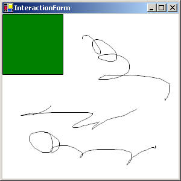

|
Defining User Interaction
This tutorial will show you how to design the set of event handlers that
will define the user experience. It will cover how to add mouse and
keyboard event handlers to the main camera and other nodes, as well as how
to filter and consume events.
|
|

Download the complete code sample in Java or C#.
1.
Setup
We need to create a window with a Piccolo canvas, so that we can add the
interface components to the canvas.
-
First you will need to reference the appropriate packages/namespaces. Add
the following lines to the top of your code file:
Java | C#
The first line adds the base Piccolo types, such as PNode. The
second line includes the default node types that Piccolo provides, all of which
extend PNode. The third line includes the basic event
types. The fourth line includes several utility classes. And the
last line includes various "extras," such as PForm in .NET and
PFrame in Java, which will be used below.
-
Next we will extend the
PForm class in .NET or the
PFrame class in Java. This is a convenience class that adds a
PCanvas to a window. When you extend this class, you should NOT
add your Piccolo code to the constructor. Instead, you should override the
initialize method and add all of your Piccolo code there.
See the FAQ for more
details.
Java | C#
2.
Create a Camera Event Listener
Event listeners can be attached to any node in the hierarchy. The events
that you get depend on the node that you have registered with. For example
you will only get mouse moved events when the mouse is over the node that you
have registered with, not when the mouse is over some other node.
As explained in Piccolo
Patterns, events are dispatched to the PPickPath associated with
the appropriate focus node (MouseOver, MouseFocus or KeyboardFocus). They
percolate up the pick path, giving each node along the way a chance to handle the
event if that node has a registered event handler. The events will
keep percolating up the pick path until they are consumed by a node's event
handler or they reach the originating camera node. Often you will attach
event handlers directly to the main camera, in order to receive all events that
come from the canvas.
Piccolo comes with event listeners that let the user zoom and pan the
viewpoint and drag nodes in the interface. You can use the default event
listeners directly or you can define your own. Here, we will create a new
kind of event listener and add it to the camera.
-
We will create a squiggle event handler, that draws squiggles as the mouse is
dragged along the canvas. To do this, we will extend
PBasicInputEventHandler, the standard class in Piccolo that is used to register
for mouse and keyboard events on a PNode. Add the following internal
class beneath the
initialize method.
Java | C#
PBasicInputEventHandler is the top-level event handler
class. It implements the PInputEventListener
interface. All event listeners must implement this interface.
Typically, you will not implement it directly. Instead, you will usually
create event handlers by extending the existing event handler classes.
PBasicInputEventListener provides empty methods for all of the
basic input event types. You simply override the methods for the events
you are interested in handling. In the above example we override the
appropriate methods for handling mouse pressed, dragged and released events.
When the mouse is pressed, we create a new PPath called squiggle
and add it to the canvas's main layer. Notice that we set the path's
pen width to 1 / ViewScale, so that we will always draw with a uniform
width. We also save the current mouse position as the
lastPoint.
When the mouse is dragged, we call UpdateSquiggle(). This
method will add a new line segment from the lastPoint to the
current mouse position. Finally it will set the lastPoint
to be the current mouse position.
When the mouse is released, we will call updateSquiggle one more time and
then set our current squiggle to null.
Finally, you might notice that the C# version of this code snippet, overrides
the DoesAcceptEvent method. This method is part of the
PInputEventListener interface and is used to implement event filtering in
Piccolo.NET. Any event handler class can override this method and
return true if it wants to accept an event, or false otherwise.
Filtered events will never be dispatched to the event handler. In this
case, we only accept left mouse button events, so that the right mouse button
cannot be used to draw squiggles.
-
Now that we have created our squiggle event handler, we need to register it
with a node so that it can receive events. We will add the squiggle event
handler to the main camera node. Add the following lines of code to the
initialize method.
Java | C#
First we remove the default pan event handler because we don't want it to
conflict with our squiggle event handler. Since we are not using our
right mouse button, we do not have to remove the default zoom event handler.
Next we create our squiggle event handler. Notice that the Java version
of this code snippet calls the setEventFilter() method and
passes it a new instance of PInputEventFilter. In
Piccolo.Java, event filtering is accomplished by creating a new event filter
object and setting various masks on that object. In particular, an
event will be accepted if it contains all the modifiers listed in the
andMask, at least one of the modifiers listed in the
orMask, and none of the modifiers listed in the
notMask. In this case, we set the andMask to
a BUTTON1_MASK, so that it will only accept left mouse button
events.
Finally, we register our new squiggle event handler to receive events from
the camera. Notice that we do this by calling the canvas's
AddInputEventListener() method. This is just a convenience
method that adds the given event listener to the main camera associated with
the canvas. We could have also gotten the camera from the canvas and
added the event listener directly.
3. Create a Node
Event Listener
Now that we have added an event handler to the camera, lets try adding an
event handler to another node.
-
First, we will create green rectangle node and add it to the main layer.
Add the following lines of code to the
initialize method.
Java | C#
-
Next, we will create a new event handler that will change our node's color to
orange when the mouse is pressed over the node and back to green, when it is
released. Additionally, the event handler will move the node when the
mouse is dragged. We will be careful to consume these events, since we
don't want dragging the node around to draw squiggles underneath of it.
Note, this is a simple example, but most of the time the best way to implement
dragging is to use a PDragEventHandler. Add the following lines of code
to the project. The java snippet should be added directly to the
initialize method. The .NET snippet should be added beneath
initialize.
Java | C#
The first thing you might notice is that the C# version of this code snippet
does not extend PBasicInputEventHandler. Instead, it
consists of several distinct methods. In Piccolo.NET there are actually
two ways to create event handlers. The first is to use the standard
approach of extending the event handler classes. But, you can also add
event handler methods directly to a node, in the same way that you can add
event handler methods directly to Control. PNode defines Events for each
of the basic input events. The benefit of doing things this way is that
it takes fewer lines of code. The benefit of using classes is that your
event handlers will be reusable and capable of maintaining state.
When the mouse is pressed, we get the pressed node and set it's fill color to
be orange. Next, we get the InputManager from the event and set it's
keyboard focus node to be the current pick path generated from this mouse
pressed event. This ensures that all future keyboard events will be
dispatched to that pick path. Otherwise, our key pressed event handler
would never get called. For more information about focus nodes, picking
and event dispatch, see Piccolo
Patterns. Finally, we consume the event by marking it as
handled. If we did not do this, the event would percolate up to the
camera and get dispatched to our squiggle event handler.
When the mouse is dragged, we get the distance that the mouse has moved from
it's last position and we translate the node by that amount. This is
how dragging is implemented. Notice that we get the distance by calling
GetDeltaRelativeToNode, ensuring that the value returned is in
the local coordinate system of this node. We also mark this event as
handled.
When the mouse is released, we set the node's fill back to green and mark the
event as handled.
When an arrow key is pressed, we will translate the node by 10 in the
direction of the arrow. Note the key pressed event handler will only
get called when our node has the keyboard focus. So, once we click on
the node, we will be able to move it with the arrow keys . But, after
we draw a squiggle, the arrow keys will no longer move the node, since the
squiggle event handler resets the keyboard focus to null. We would then
have to click on the node again to give it back the keyboard focus.
-
Finally, we will register the node event handler with our node. Add the
following lines of code to the
initialize method.
Java | C#
Notice that the C# version of this code snippet adds each of the event handler
methods individually, using the PInputEventHandler delegate.
We could have also extended PBasicInputEventHandler and added a
new event handler class to the node, as the Java code does.
|